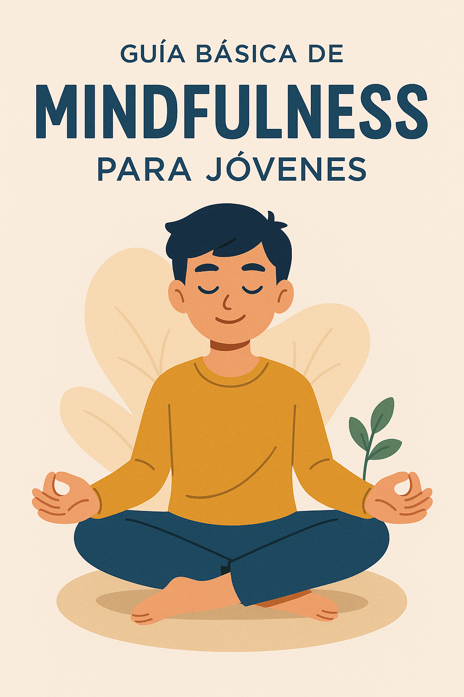
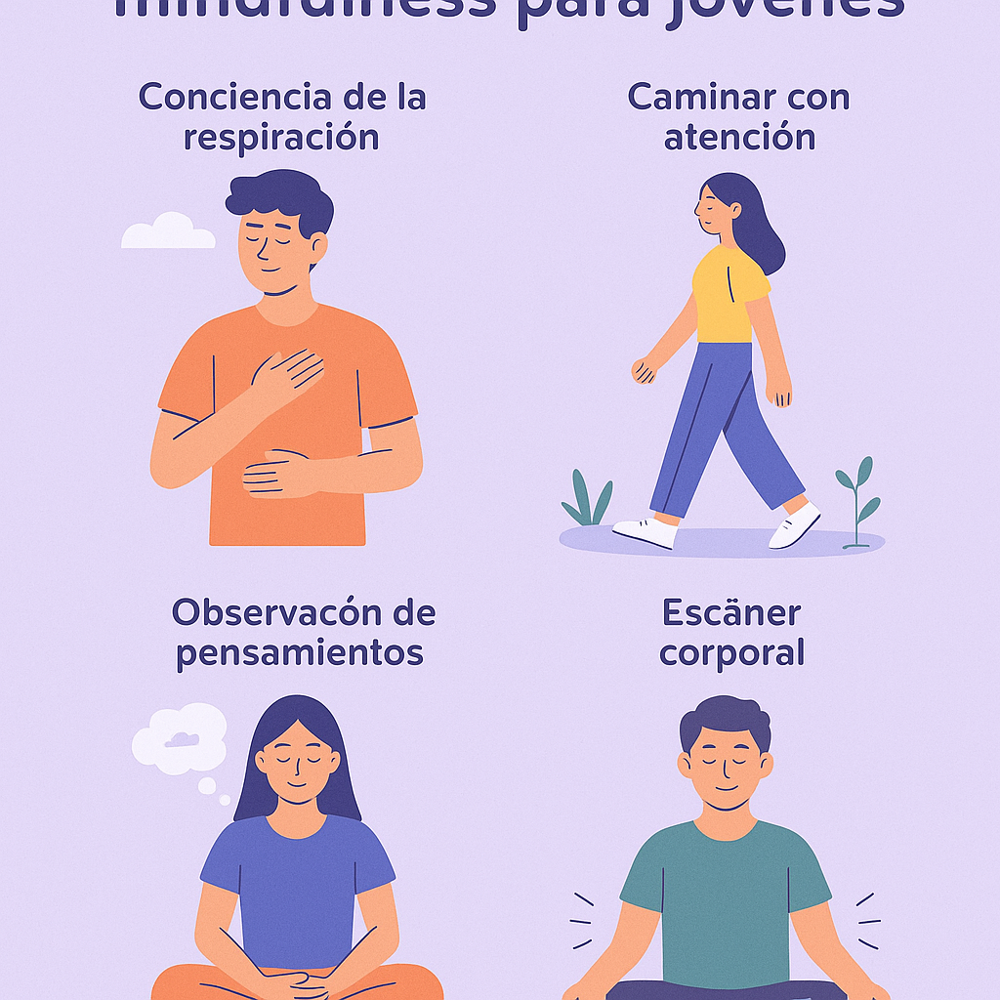

Guía básica de mindfulness para jóvenes
En un mundo lleno de distracciones digitales, exámenes, redes sociales y presiones escolares, aprender mindfulness puede ser una herramienta clave para mejorar tu bienestar emocional.
¿Qué es el mindfulness?
Es la capacidad de prestar atención plena al momento presente. Sin juzgar. Sin pensar en lo que hiciste ayer ni en lo que tienes que hacer mañana. Solo estar aquí y ahora.
Practicarlo no solo mejora la concentración, sino que ayuda a reducir la ansiedad, mejorar el sueño y sentirte más en paz contigo mismo.
¿Por qué es útil para los jóvenes?
- Te ayuda a responder en lugar de reaccionar ante el estrés.
- Reduce pensamientos intrusivos y ansiedad social.
- Mejora la autoestima y el enfoque escolar.
- Fomenta la calma mental durante exámenes o conflictos.
Y si estás lidiando con pensamientos difíciles, prueba también estas afirmaciones para soltar pensamientos negativos.
🧘♂️ Técnicas de mindfulness para jóvenes
1. Respiración consciente
Cierra los ojos. Inhala durante 4 segundos. Exhala durante 6. Hazlo durante 1 minuto. Puedes complementarlo con esta guía de respiración relajante.
2. Escaneo corporal
Recuéstate y enfoca tu atención en cada parte del cuerpo, desde los pies hasta la cabeza. Observa sin juzgar.
3. Diario de pensamientos
Llevar un journal para la ansiedad te permite identificar emociones y liberar lo que sientes sin presión.
4. Meditación guiada
Escucha meditaciones breves que te guíen paso a paso. Aquí tienes una ideal para empezar: Meditación guiada para principiantes.
Cómo integrarlo a tu rutina diaria
- Al despertar: 3 respiraciones conscientes antes de mirar el móvil.
- En clase o estudio: pausa de 1 minuto entre materias para respirar.
- Antes de dormir: escribe en tu diario cómo te sentiste hoy.
Mindfulness y bienestar emocional
Al practicar atención plena, estás entrenando tu mente para enfocarse, tolerar emociones difíciles y responder con más calma.
Si sientes que necesitas una pausa durante el día, intenta una pausa consciente en medio del estrés.